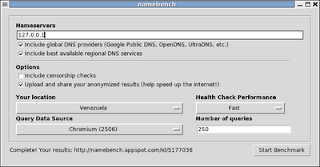
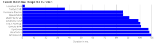

Usar dnsmasq como servidor DNS cache y local
Posted on sáb 20 agosto 2011 in Tutorial de Linux • 2 min read
En el artículo anterior explicaba como mejorar las consultas de DNS del equipo con dnsmaq.
También se puede agregar equipos con su IP como de un servidor de DNS con Bind9 en funcionamiento.
Se tiene una máquina virtual de nombre grievous e IP 192.168.10.53.
Para instalr dnsmasq se ejecuta apt-get.
apt-get install dnsmasq
Configurar dnsmasq como DNS cache y local.
Se define la ruta del archivo resolv.conf que hace consultas al servidor de DNS externo.
resolv-file=/etc/resolv-orig.conf
Definir respuestas de peticiones locales dadas por el archivo /etc/hosts.
local=/localnet/
Y eso es todo lo que hay que cambiarse en el archivo /etc/dnsmasq.conf para resolver nombres de equipos locales por medio de /etc/hosts.
Agregar los equipos en el archivo /etc/hosts.
En este caso se tiene el equipo grievous:
192.168.10.53 grievous grievous
Si se necesita agregar más equipos al servidor de DNS simplemente se edita el archivo /etc/hosts agregando los equipos en dicho archivo.
Se crea el archivo /etc/resolv-orig.conf donde se encuentra las IPs de los servidores de DNS externos. En este caso se está usando los servidores de DNS de Google, OpenDNS y de la red del trabajo.
nameserver 8.8.8.8
nameserver 8.8.4.4
nameserver 208.67.222.222
nameserver 208.67.220.220
nameserver 192.168.32.254
Ya se tiene configurado el servidor de DNS, sólo falta que el equipo realice las consultas por medio del archivo /etc/resolv.conf, el cual debe apuntar al servidor local de DNS (127.0.0.1).
nameserver 127.0.0.1
Ahora se puede probar la resolución de nombres en el equipo.
Probar que devuelve respuestas el servidor DNS al consultar el nombre del equipo grievous:
host grievous
grievous has address 192.168.10.53
dig grievous
; <<>> DiG 9.7.3 <<>> grievous
;; global options: +cmd
;; Got answer:
;; ->>HEADER<<- opcode: QUERY, status: NOERROR, id: 19819
;; flags: qr aa rd ra; QUERY: 1, ANSWER: 1, AUTHORITY: 0, ADDITIONAL: 0
;; QUESTION SECTION:
;grievous. IN A
;; ANSWER SECTION:
grievous. 0 IN A 192.168.10.53
;; Query time: 6 msec
;; SERVER: 127.0.0.1#53(127.0.0.1)
;; WHEN: Sat Aug 20 10:06:45 2011
;; MSG SIZE rcvd: 42
Ahora se puede verificar los rendimientos de los servidores de DNS con NameBench. Para instalarlo se ejecuta apt-get.
apt-get install namebench
En la siguiente figura se muestra la ejecución de namebench donde se le define el servidor de Nombres a utilizar.

A continuación se muestra las figuras del resultado de Namebench.




===
¡Haz tu donativo! Si te gustó el artículo puedes realizar un donativo con Bitcoin (BTC) usando la billetera digital de tu preferencia a la siguiente dirección: 17MtNybhdkA9GV3UNS6BTwPcuhjXoPrSzV
O Escaneando el código QR desde billetera: